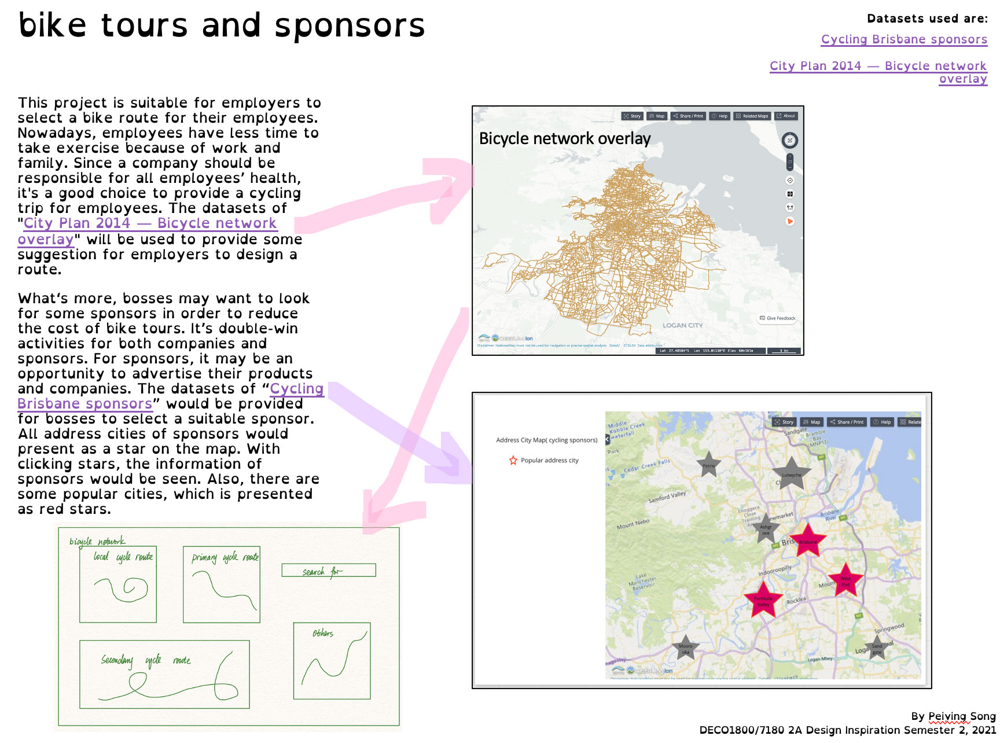

- Individual Work -
2A Design Inspiration
For my 2A design inspiration, it’s about bike tour and sponsors. This project is created for employers to custom departments’ cycling trip. I had produced a “cycling recreation” poster at first. However, through communicating with partners and tutors, I realize that it may cannot explore datasets a lot, and it may be a wrong direction. So, I have changed a lot after that, including the interface and content. Although, our team didn’t use my inspiration, I believe that it’s a good idea.
Original inspiration

Final inspiration
2C Project Proposal
We have completed the proposal of our program in week 5. I have putted a link of my contribution here.
We have gotten one important suggestion that is about showing the matched type of food, after showing the concept of our program in the contact of week 6. Some other food trucks which are marked by the types of food should be appearing around the selected location. It’s convenient for the food merchants to compare locations with each other or think about if this location is suitable for them.
Especially, the food merchants can consider if there is some same food or matched food near the selected location. For example, if one merchant wants to place a food truck of fried chicken in a particular place. It's better if there is a food truck that sells cokes and beer nearby. However, this merchant should avoid a pizza truck nearby, because both pizza and fried chicken almost belong to staple food.
What’s more, how to use those five datasets more relevantly is a significant problem on a map. For the preliminary arrangement, we have intended to use some icons to represent some popular kinds of food. After clicking the icons, there are some details of food trucks that sell the same kind of food, including locations, open time and so on. Also, we have tried to design two icons to represent the bus stops and ferry terminals, then the stops or terminals will appear as a list after clicking. Some food trucks around the selected bus stop or ferry terminal should be listed, after clicking a bus stop or a ferry terminal.
2D Prototype
We have had discussion the MVP of our program in week 8. There are some basic and necessary functions which should be implemented initially, including showing marked map, searching by users, showing specific information of food trucks. We make sure that a map will be designed as a background. And the users can filter the data by click some icons which are some symbols of some popular types of food.
Also, there will be three drop-down boxes which can be used to select safety level of suburb, bus stop and ferry terminal. After clicking an icon or select an option from a drop-down box, the map will display some associated suburbs as a format of some same icons. When click an icon on the map, the details of food trucks will display. What' more, users can search directly. Additionally, there are two charts will be displayed which are include the percentage of different types of food in order to provide some suggestion for food trucks' merchants. After this contact, I have finished our low-fidelity prototyping by using Invision.
We have gotten some feedback about our prototyping during showing it. In fact, we have received three useful suggestions. The important one is that a user have be confused with the aim of using our web. After considering, we have made a decision to add a guide in our web in order to provide some information of our web, like displaying some steps of using. Also, there will be a food truck icon added in our webpage in order to show the aim of our web directly.
Another is about the filters. All filters displaying on the map makes this webpage chaos in the visual. Thus, we will separate these filters as several parts which will be put at different positions on our web. What's more, we have made a decision to delete the sharing function, after showing the lower-fidelity prototyping. Because it's not a main function that we want to display.
For our web, the "about us" page and "reference" page have coded by me, at first.
What's more, I have implemented displaying two datasets (bus stops and ferry terminals) on the map. I have learned how to add more layers on the map and make these layers controlled by the console on the map. Leaflet is a good tool to implement a map. And also, I have gained the knowledge about leaflet, like how to change the icon on the map, and how to combine API, map and console. For API, the capital and small letters of records are significant. Since a wrong usage of the format of letters, I have spent a long time to look for errors, when the map cannot display correctly.
After that, the APIs of “food trucks” are implemented by me in our program. And all three API(bus stops, ferry terminals and food trucks) can be controlled by a console.
Unfortunately, the API of “food truck” cannot be used directly. One reason is that we want to show the locations of food trucks and their types of food using different icons on the map in our program, but the API of “food truck” has these two attributes separately in two tables. So, I have tried to use SQL in order to combine the attributes we needed from two tables.
Another reason is the format of “food truck” API has changed. Firstly, I had downloaded the csv files, imported them into the local phpMyAdmin5 and then exported as a SQL file. Also, I had coded the php for this API. In fact, it can be used on my computer, but it’s troublesome for my team members to have a look and code other functions based on my SQL file, since they have to create their own database firstly. Thus, I have changed the methods of using “food truck” API. I have exported a json file from local phpMyAdmin5 as our program’s database. It’s convenient for other team members to use, because it can be used directly.
Finally, there is a problem costing much time when I’m coding JavaScript. I don’t know why my code doesn’t work when I try to implement the data filtering. After checking several times, I have realized that the capacity or size of list in JavaScript should use “list.length”, but “list.size()”which is written by me is wrong. Maybe I will remember this error for a long time.
2E Final Delivery
I have realized that the bus stops’ icons is too many covered each other, after receiving the feedback of the 2D work-in-Progress report. The distribution of bus stops has been changed a lot by me. There are more than 6000 records in the datasets of bus stops. Originally, I had displayed 500 locations of bus stops. However, there are too many bus stops’ icons covered and accumulated on the map. For this reason, I have added some code to filter simply records. Now, the distribution of bus stops looks better than before.
What's more, I have prepared a pptand a speech draft for the presentation of trade show. Also, I have written two parts of 2E report.
3 Portfolio
In fact, most of my expectations have implemented, but my home page cannot be implemented as my idea. I had intended to design that there is a lighting on the home page everywhere the mouse hover or pass. Besides that, I had designed a filling effect before which is flexible when hovering the “explore” button. However, it’s so difficult for me and I have tried some times in order to achieve it. I have noticed that I’m not good at to code JavaScript, so all things on the web are static. In the future, I will learn more knowledge about JavaScript and try my best to let all elements are flexible.